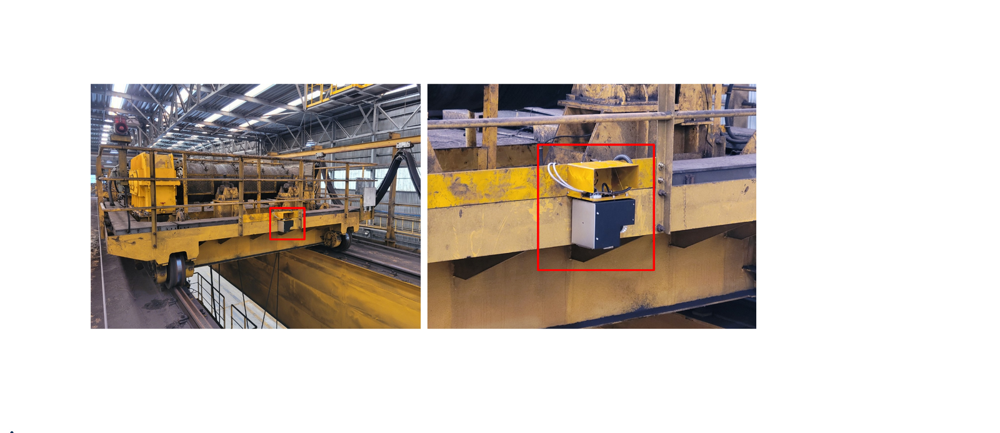
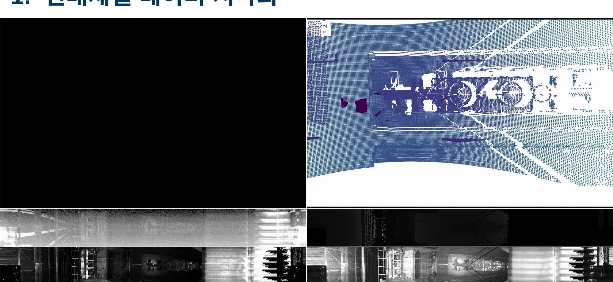
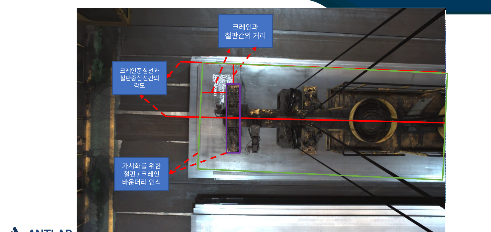
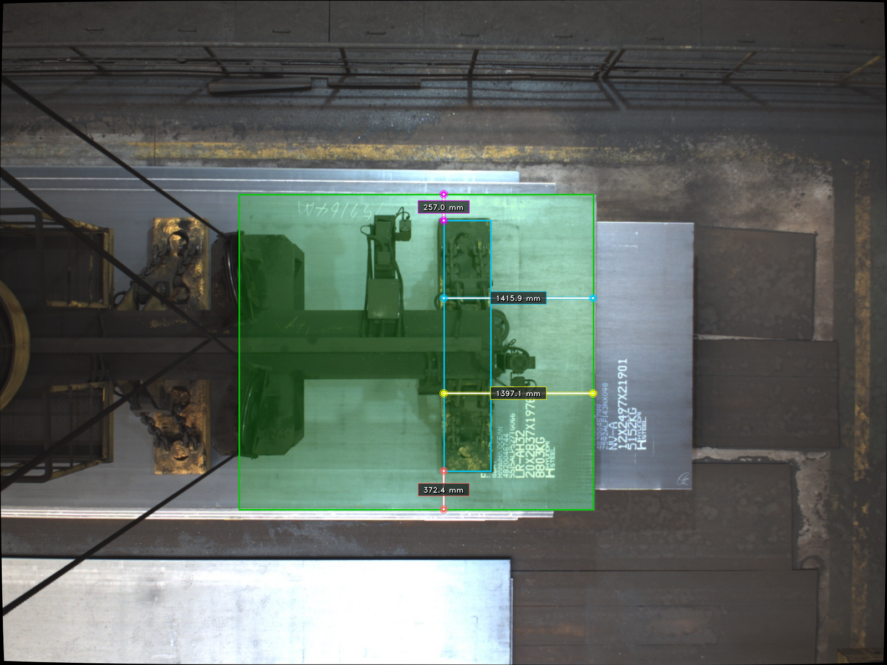

마그넷 포트 크레인 위치 정밀 측정 시스템 개발
천장 설치형 카메라–LiDAR 융합 센서로 마그넷 크레인이 운반하는 철판과 마그넷 포트의 3D 위치를 ±50mm 정밀도로 실시간 측정하고, 이를 기반으로 크레인 이동 경로를 자동 보정하는 크레인 자동화 시스템을 개발한 과제.
Overview
제철 공정에서 마그넷 크레인은 철판을 들어 옮기는 핵심 설비이지만, 크레인 위치 제어 오차가 누적되면 철판 충돌로 인한 작업자 부상과 제품 손상이 발생하고, 이를 막기 위한 수동 보정 작업은 생산성을 떨어뜨린다. 본 과제는 이러한 문제를 해소하기 위해 천장 설치형 카메라–LiDAR 융합 센서로 철판 및 마그넷 포트의 위치를 실시간으로 정밀 측정하고, 측정 위치를 기반으로 크레인 이동 경로를 자동 보정하는 시스템을 개발하는 것을 목표로 한다.
기술적 접근은 크게 세 축으로 구성된다. (1) 센서 시스템 — 천장에 설치한 카메라와 LiDAR를 융합하여 철판 및 마그넷의 3D 위치를 ±50mm 정밀도로 측정한다. (2) AI 기반 검출 — 딥러닝 객체 검출 및 세그멘테이션으로 철판과 포트를 인식한다. (3) 실시간 보정 — 측정된 위치를 기반으로 크레인 이동 경로를 자동 보정하는 알고리즘을 구성한다.
Approach
- 다중 센서 시스템 — 천장(캐빈)측에 카메라와 LiDAR를 설치하고, LiDAR–카메라 캘리브레이션과 센서 융합으로 철판·마그넷 포트의 위치를 정밀하게 측정. 크레인 2개소(3·4호기)에 엣지 추론용 시스템과 함께 설치.
- 측정 파이프라인 — 카메라 영상에서 철판과 포트를 검출·세그멘테이션한 뒤, LiDAR 포인트클라우드와 결합해 철판 길이 방향(L1·L2)과 너비 방향(L3·L4)의 거리를 측정.
- 세그멘테이션 고도화 — SAM 기반 세그멘테이션에 노이즈 제거·후처리를 적용하여, 저해상도 LiDAR와 모델 오탐으로 인한 측정 오차를 줄이고 측정값의 안정성을 확보.
- 시스템 통합 — PLC 연동(측정 지시·결과 송수신)과 산업용 PC 기반 추론 시스템을 구성하고, 측정 결과를 사내 메인 시스템과 연동.
Data & Sensors
크레인 3호기·4호기에 설치한 다중 센서로부터 LiDAR–카메라 데이터를 취득한다. 센서 해상도는 LiDAR 2048 × 128 @ 10Hz, Camera 1920 × 1200 @ 30fps이며, LiDAR–카메라 캘리브레이션을 통해 카메라 이미지와 LiDAR projection 이미지를 정합하여 활용한다.


Methods & Tech

Results
세그먼트 마스크 고도화와 평면 추정 노이즈 제거, 고해상화를 적용하여 기존 100mm 이상이던 거리 측정 오차를 50mm 이하로 개선하였다. 이는 단일 세그먼테이션 모델의 탐지 오류와 LiDAR 포인트의 저해상도로 인한 정확도 감소 문제를 보완한 결과이다.
크레인 현장에서 진행한 다수의 거리 측정 실험(철판 길이 방향 L1·L2, 너비 방향 L3·L4)에서 실측값 대비 계측값의 오차가 모든 측정점에서 50mm 이하로 나타나, 목표 정확도(50mm 이내 오차)를 달성하였다. 대부분의 측정점은 0–22mm 수준의 오차를 보였으며 최대 오차도 약 41mm로 목표 범위 내에 있었다. 또한 다중센서 시스템의 측정 결과가 FTP 서버 업로드를 통해 Main system에 정상 적용됨을 현장에서 확인하였다.
